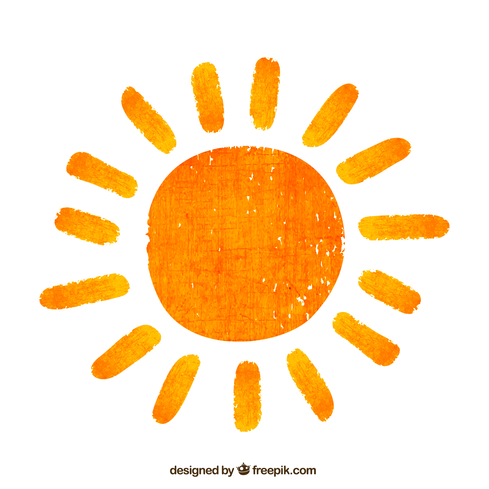

What is radiation?
Radiation is energy that is all around us for every minute of every day.
We are exposed to radiation in three main ways.
Sun
Food

Radon gas

Radiation is energy that is all around us for every minute of every day.
We are exposed to radiation in three main ways.